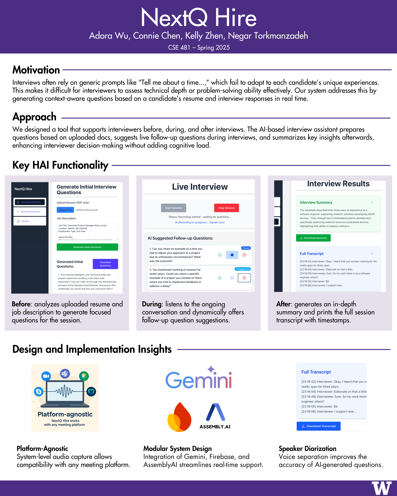
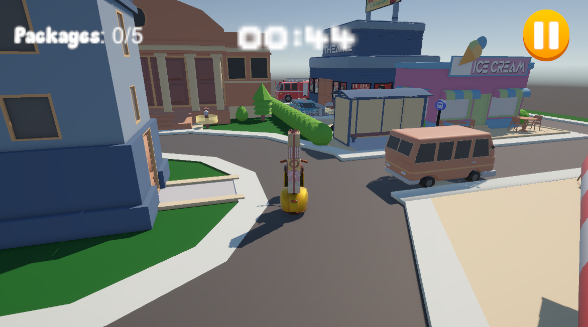

welcome to my honors portfolio
Adora Wu | University of Washington '25

Adora Wu | University of Washington '25
As I reflect on my undergraduate journey, I'm deeply grateful for the wealth of intellectual opportunities I've encountered, and for the community of thoughtful, curious individuals who shaped my learning along the way.
I came to the University of Washington as an engineering major in the Honors Program, with only a vague sense of how I wanted to contribute to the world around me. Given the freedom to explore, I was drawn in to computer science, for the logic of theory and the creativity of programming. I've always loved solving problems, and getting accepted into the major opened the door to dive deeply into topics that excited me. From participating in hackathons and a summer internship that pushed me out of my comfort zone, I found joy in building and collaborating with others.
Through hands-on projects, Honors seminars, and extracurriculars like teaching, I began to notice a rhythm in how I learn: asking questions sparked a desire to build, and building helped me discover insights I didn't know I was searching for. This cycle, Curiosity -> Building -> Learning, became the core of how I approach challenges, both in and out of the classroom. In the scope of my undergraduate experiences, I've structured this portfolio around this framework: Curiosity captures the questions and explorations that sparked my interest, Building showcases the work I created in pursuit of those ideas, and Learning reflects on the growth that came afterward. Together, these themes tell the story of how I've come to see learning as a dynamic process that I'll carry into every future space I enter.
What I'll carry most from my time at UW are the people: professors who challenged me to think critically, teammates who inspired me deeply, and family and friends who believed in me. As I move forward, bittersweetly closing this chapter, I'll always hold close the communities that shaped me. They made these years meaningful and unforgettable.
Exploration across disciplines and communities
Being a violinist in the UW Symphony Orchestra under Dr. Rahbee has been an incredible experience! I had the unforgettable opportunity to bring to life the music of Beethoven, Ravel, and more, performing alongside so many talented musicians. Click on the YouTube links below to watch some of my favorite 2024-2025 performances.
As an academic tutor at HiScore Learning, I support K-5th grade students in preparing for the CogAT and STAR gifted program exams. I lead small groups of around ten students in weekly sessions, covering three core subjects: Nonverbal (logic puzzles), Verbal (reading and grammar), and Math. I review student performance, offer individualized feedback to correct misunderstandings, and curate worksheets to reinforce specific skill areas such as reading comprehension or logical reasoning.
Through this activity, I have the opportunity to strengthen my communication, leadership, and mentorship skills. It allows me to practice the ability to break down complex ideas into simple parts for others to understand. Being able to clearly explain ideas to others is an asset that I can apply in my personal and professional goals. Guiding younger students through difficult concepts has taught me how to adapt my communication style, stay patient under pressure, and motivate others in a supportive way. Tutoring requires interpersonal skills of empathy and adaptability, which I believe complement my more technical skillset as a computer science student.
Tutoring is a meaningful way to stay grounded in my community, and I find a lot of fulfillment in helping students gain confidence in their abilities. This experience has taught me how to adjust my teaching style based on different learning needs and how to create an engaging learning environment, even for younger students who have short attention spans.
Professionally, this experience helps me build confidence in leadership and mentorship roles. Personally, tutoring has strengthened my sense of responsibility. I've become more aware of the diverse ways students approach learning, and it's made me more intentional in how I interact with others.
Projects and CS Coursework
A Chrome extension that generates hints for LeetCode problems, powered by Gemini AI. Built with React and Node.js.

A full-stack tool that integrates Gemini, Firebase Firestore and AssemblyAI. Focused on core Human-AI Interaction principles throughout design and implementation.
A web app that turns text prompts into visual, interactive mind maps using Gemini AI. Built with React and Next.js.

First project for CSE457. Made with Unity.


Final artifact for CSE457. Made with Unity.
FSI Final Project Link. My group's final project for CSE442 was on Fragile State Indexes.

Throughout university, values like integrity, empathy, and resilience have become central to guiding me through challenges and defining what kind of imapct I want to make.
I'm deeply grateful for the mentors, peers, family, and the broader UW community who encouraged and believed in me. I wouldn't be who I am today without their support.
The experiences I've had have prepared me to take on roles in industry and possibly graduate study. I hope to pursue an MBA in the future.
There is still so much to explore. Right now, I'm especially curious about areas including AI ethics, sustainable technology, autonomous systems, and cloud infrastructure, and how they'll shape the future of innovation.